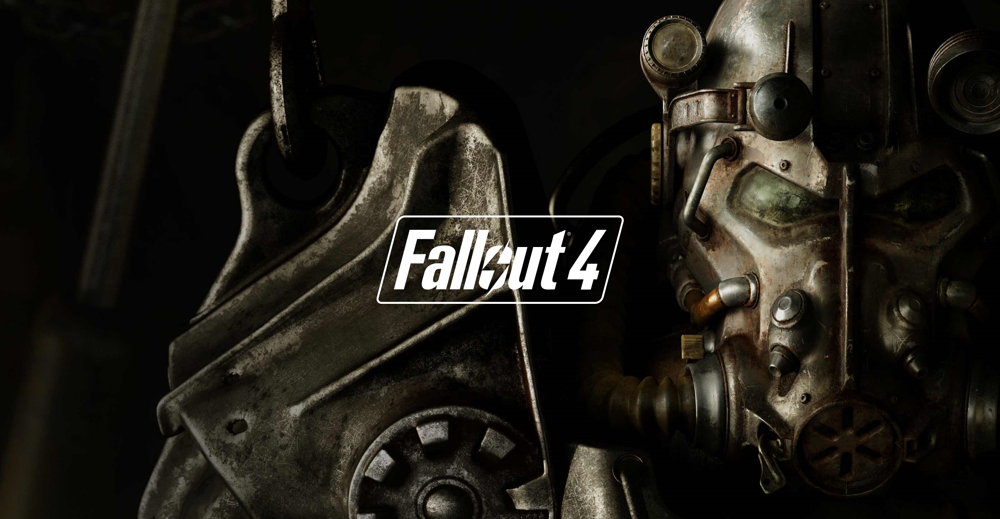
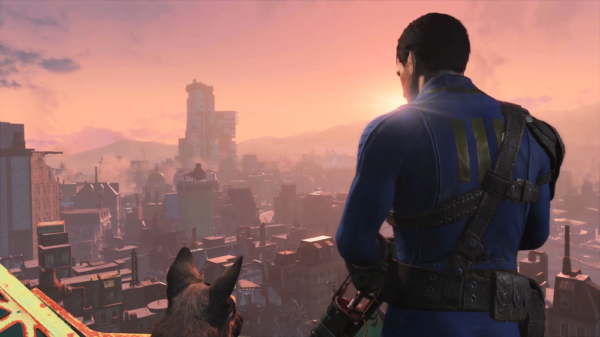
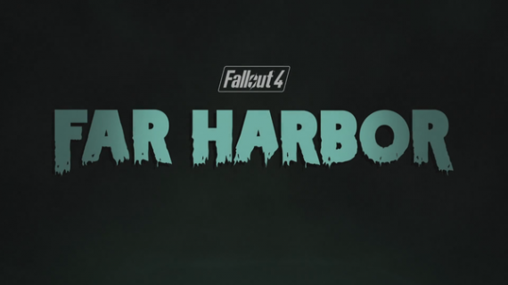

Fallout 4 is an action role-playing video game developed by Bethesda Game Studios and published by Bethesda Softworks for Microsoft Windows, PlayStation 4, and Xbox One. It is the sixth major installment in the Fallout series, and was released worldwide on November 10, 2015.
The game is set in a post-apocalyptic Boston in the year 2287, 210 years after a devastating nuclear war. The player character emerges from an underground nuclear fallout shelter known as Vault 111, and subsequently explores the world, completes various quests and acquires experience points to level up their character. It is the first game in the series to feature full voice acting for the protagonist.
Fallout 4 received positive reviews from critics with many praising the world depth, player freedom, overall amount of content, crafting, and soundtrack. The game shipped 12 million units and generated $750 million (USD) within the first 24 hours of its launch. The game received numerous awards and nominations from various gaming publications, including the Academy of Interactive Arts & Sciences and British Academy Games Awards, making it both a commercial and critical success.

Fallout 4's gameplay is similar to that of Fallout 3 and Fallout: New Vegas, the previous two main entries in the series. Returning features include a camera that can switch between a first-person and third-person perspective, and the ability to roam anywhere on the map. Fallout 4 introduces new features including a layered armor system, base-building, a dynamic dialogue system featuring 111,000 lines of dialogue, an in-depth crafting system which implements every lootable object in the game, and much more. Enemies such as mole rats, raiders, super-mutants, deathclaws, and feral ghouls return in Fallout 4, along with the companion Dogmeat.Players have the ability to roam anywhere on the map, and leave a conversation at any time. They have the ability to customize weapons; the game includes over 50 base guns, which can be crafted with a variety of modifications, such as barrel types and laser focus, with over 700 modifications available.

On February 16, 2016, Bethesda announced details, prices, and release dates for the first three add-ons for Fallout 4. The first add-on, Automatron, which allows players to build their custom robot companion by using robot parts while adding additional quests, was released to the European and North American markets on March 22, 2016. This was followed by Wasteland Workshop on April 12, 2016, which introduces new build options for settlements and the ability for players to put captured creatures or humans in a cage, and adds new decorations like neon lights and lettering. The third add-on, titled Far Harbor, is a story expansion set on a post-war Mount Desert Island in Maine, and was released on May 19, 2016. On June 12, 2016 at E3 2016, Bethesda revealed three new DLC packages for the game; the first two, Contraptions Workshop, released on June 21, 2016, and Vault-Tec Workshop, released on July 26, 2016, are structured similarly to the Wasteland Workshop DLC, offering the player more build options and decorations. Fallout 4's third and final DLC, Nuka-World, which was released on August 30, 2016, adds an amusement park-based area for players to explore, in which the player can either side with or put an end to various raider groups residing in the park.